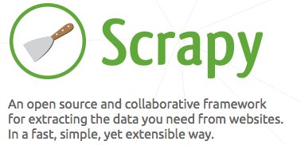
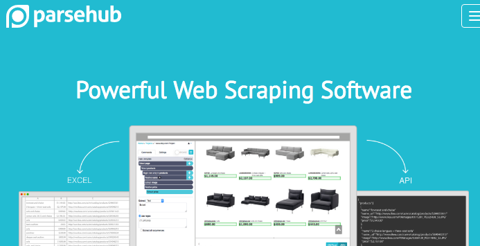
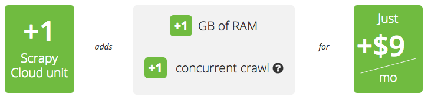
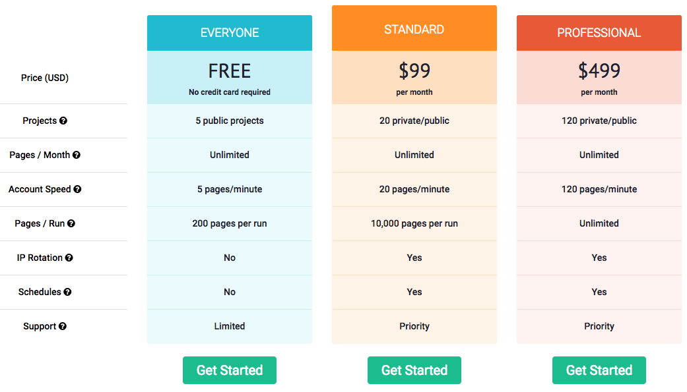
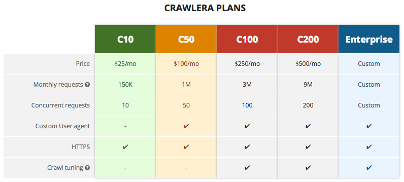

ParseHub vs. Scrapy Comparison – which alternative is better for web scraping?

Scrapy is probably the most popular open source framework for web scraping. It's been around since at least 2008, which is when I first used it. It started out as an open-source release of a python framework built for scraping a large number for a commercial enterprise. The framework turned out to be so successful on its own that the creators of it formed a company around it––scrapinghub.com.

In this article, I will first compare the visual web scraping tool ParseHub to Scrapy as an open-source python project, and then I will compare ParseHub to the ScrapingHub paid service which runs Scrapy spiders for a fee.
ParseHub and Scrapy
Comparing ParseHub to Scrapy is somewhat of an apples-to-oranges comparison, because one is a UI tool and the other is a programming library. A more apples-to-apples comparison would be to the associated open-source project Portia. But since Scrapy is so established, and Portia is relatively new, I will confine this article to the first comparison, and leave Portia for another day and another blog post.
| Feature | ParseHub | Scrapy |
|---|---|---|
| Authoring environment | Desktop app (Mac, Windows and Linux) | Python plus scrapy command line tool |
| Scraper logic | Variables, loops, conditionals, function calls (via templates) | Variables, loops, conditionals, function calls (arbitrary python) |
| Javascript, Ajax and dynamic content | Yes | With external libraries |
| Pop-ups, infinite scroll, hover content | Yes | With external libraries |
| Debugging | Visual debugger | Python logs |
| Knowledge of HTML and HTTP | None required | Required |
| Selecting elements | Point-and-click, CSS seletors, XPath | CSS seletors, XPath |
| Transforming data | Regex, javascript expressions | Regex, arbitrary python |
| Speed | Fast parallel execution | Fast parallel execution |
| Hosting | Hosted on cloud of hundreds of ParseHub servers | Hosted on your local machine or your own servers |
| IP Rotation | Included in paid plans | Must pay external service |
| Sites (AKA spiders, scrapers, projects) | Free plan: 5, $99/month: 20, $499/month: 120 | Limited by your infrastructure |
| Support | Free professional support | Community support |
| Data export | CSV, JSON, API | CSV, JSON, API |
| Run-time configuration | Passed in as a JSON object | Passed in command line, arbitrary python |
ParseHub and Scrapy: Conculsion
ParseHub offers most of the web scraping power and scale of Scrapy in a much easier-to-use package. Because we're actually big fans of Scrapy, we still recommend it for a few situations:
- Tight integration with existing python codebase and infrastructure
- Crawling hundreds of websites and grabbing all HTML or just some keywords
We are working on solving the second use case with ParseHub right now. Stay tuned!
ParseHub and Scrapinghub
Scrapinghub is a paid service for running web scrapers (AKA spiders or projects) created with the open-source python framework Scrapy. It is equivalent to ParseHub's "run on server" and "run on a schedule" service which is integrated into the ParseHub desktop app.
At first glance, the main difference between the two services appears to be their pricing. ParseHub packages capabilities into conventional software-as-a-service (SaaS) plans Free, Standard ($99) and Professional ($499). Scrapinghub prices its service in $9 "scrapy cloud units", similar to infrastructure-as-a-service (IaaS) such as Amazon EC2.

But it is easy to see that both services offer a generous free plan that grants multiple projects and hundreds or more pages. And both ParseHub and Scrapinghub offer more speed for more money. ParseHub clearly defines how many pages a minute it will provide for each plan. Scrapinghub offers additional "concurrent crawls" for $9 each. It would require some benchmarking to estimate how much faster each crawl makes Scrapy in terms of pages per minute.

ParseHub and Scrapinghub both offer IP rotation, but Scrapinghub sells it in a separate service, Crawlera, starting at $25 a month and up to $500 or more.

Conclusion: ParseHub and Scrapinghub
Like the earlier comparison, ParseHub vs Scrapinghub is somewhat of an apples-to-oranges comparison. ParseHub is designed to work at a higher level in which most of the features of Scrapinghub are bundled together. Scrapinghub is a good choice if you are already convinced that Scrapy is for you. If you are just starting out, we encourage you to try ParseHub which will get you up and running much faster and for similar pricing.
As a final note, Scrapinghub's monitoring dashboard is really nice. Kudos.